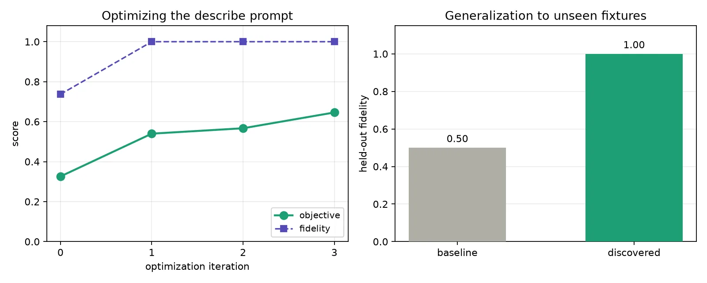
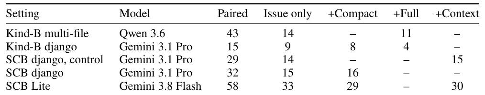

O problema: agentes que editam código sem ler tudo
Agentes de código modernos enfrentam um problema prático: repositórios grandes demais para caber inteiros no contexto. Um modelo com janela de 128 mil tokens não consegue carregar uma base de código de milhões de linhas. A solução comum é dar ao agente descrições em linguagem natural dos arquivos que ele não pode ler—uma espécie de mapa do território que ele precisa editar sem ver.
Isso levou os autores a uma hipótese natural: se as descrições forem boas o suficiente, completas e precisas, deveriam ajudar o agente a resolver issues reais. Afinal, uma descrição de alta fidelidade substitui o código-fonte quando este não cabe. O paper testa essa hipótese em quatro etapas: primeiro identifica o que torna uma descrição boa, depois constrói um benchmark para medi-la, usa o benchmark para otimizar automaticamente o prompt que gera descrições, e finalmente testa se essas descrições melhoradas ajudam na prática.
O resultado é dividido. A parte técnica funciona: o benchmark mede qualidade, o otimizador melhora as descrições, e elas de fato substituem código-fonte ausente. Mas a hipótese motivadora falha: quando o código-fonte está presente—que é como agentes normalmente operam—a documentação não melhora nada. Em alguns casos, piora levemente.
Roundtrip: medir descrição por regeneração
O benchmark central do paper é chamado roundtrip. A ideia é simples: uma boa descrição de código deve conter informação suficiente para regenerar o código original. O processo tem três etapas. Primeiro, um modelo descreve um arquivo de código em linguagem natural. Segundo, outro modelo (ou o mesmo) recebe apenas essa descrição e tenta regenerar o código. Terceiro, os testes unitários originais rodam no código regenerado. Se passam, a descrição era completa; se falham, algo ficou de fora.
Esse método trata descrição como formato de compressão. A fidelidade é binária: ou o código regenerado passa nos testes (fidelidade 1.0) ou não (0.0). O benchmark também mede compactness, o número de palavras na descrição, porque uma descrição boa deve ser completa sem ser verborrágica. A métrica final combina fidelidade média com uma pequena penalidade por tamanho.
Os autores validam o benchmark em onze fixtures reais extraídos do repositório SymPy, uma biblioteca Python de matemática simbólica. Cada fixture é um arquivo com issue documentado e testes. Para controlar memorização—o risco de que o modelo já tenha visto o código durante treinamento—eles também criam três codebases sintéticas pequenas, nunca publicadas. Em todos os casos, a descrição é gerada do arquivo pré-fix, para que a correção não vaze pela documentação.
Completude importa, tamanho não
Os experimentos com o benchmark confirmam a tese central sobre qualidade de descrição: completude, não tamanho, é o que determina fidelidade. Uma descrição curta mas completa regenera código que passa nos testes; uma descrição longa mas incompleta falha. Os autores catalogam os modos de falha: imports omitidos, valores literais de constantes ausentes, condições de exceção não documentadas, assinaturas de função incompletas.
Esse achado justifica a métrica do benchmark. Se tamanho fosse o driver principal, descrições mais longas sempre pontuariam melhor. Mas não é o que acontece. Descrições verbosas que repetem informação redundante não melhoram fidelidade; descrições concisas que capturam todos os contratos e casos especiais sim. O benchmark recompensa descrições que são ao mesmo tempo completas e compactas.

Otimização automática do prompt de descrição
Com o benchmark funcionando, os autores tratam o prompt que gera descrições como um hiperparâmetro e o otimizam. O loop é simples: um modelo outer (gemini-2.5-pro) propõe um novo prompt de descrição; o benchmark avalia as descrições que esse prompt produz em um conjunto de treinamento de três fixtures; se a pontuação melhora, o prompt é mantido; caso contrário, descartado. O objetivo recompensa fidelidade média com pequena penalidade por tamanho de descrição.
O proposer recebe o prompt atual, sua fidelidade medida e tamanho médio de descrição, e é instruído a reescrevê-lo para pontuar mais alto. A temperatura do proposer é 0.4 para que propostas sucessivas difiram; os estágios de descrição e regeneração dentro do loop usam temperatura zero para pontuação determinística. O loop roda até convergência.
A otimização funciona. Partindo de um prompt baseline escrito à mão, o objetivo sobe a cada iteração. O loop primeiro eleva fidelidade a 1.0 no conjunto de treinamento, depois mantém fidelidade em 1.0 enquanto corta tamanho de descrição—exatamente o comportamento que a tese prevê. Uma vez que descrições são completas, a única forma de melhorar o objetivo é torná-las mais curtas.

Generalização e interpretabilidade
Para testar se as melhorias generalizam em vez de overfittar, os autores dividem os fixtures em conjunto de treinamento (três fixtures que o loop otimiza) e conjunto held-out (dois fixtures nunca vistos durante otimização). O prompt descoberto eleva fidelidade média de 0.5 para 1.0 nos fixtures held-out, usando menos palavras que o baseline. Três execuções independentes com diferentes temperaturas do proposer todas atingem fidelidade plena no treinamento e preservam isso fora da amostra.
O prompt descoberto é interpretável, e isso é a evidência mais forte de que a otimização captura sinal real. Onde o baseline pedia em termos gerais inputs, outputs e casos especiais, o prompt descoberto adiciona instruções específicas que mapeiam diretamente nos modos de falha catalogados: listar todos os imports precisamente, definir constantes de nível de módulo com valores literais exatos, declarar assinaturas exatas, defaults, e condições para cada exceção e caminho de retorno.
O otimizador não teve acesso à análise manual de modos de falha dos autores. A concordância entre as falhas catalogadas e os consertos descobertos é evidência independente de que as melhorias são genuínas. O prompt completo descoberto e os prompts base dos quais foi otimizado estão no material suplementar.
Transferência para resolução de issues: código ausente
A otimização melhora o prompt contra o objetivo roundtrip. A pergunta que motivou o trabalho é se esses ganhos transferem para a tarefa que a documentação deveria servir: resolver uma issue real de repositório, no estilo do benchmark SWE-bench. Os autores separam dois regimes de teste.
Primeiro, código-fonte ausente: o agente recebe o texto da issue mas não o arquivo-fonte, apenas uma descrição dele. Esse é o cenário onde documentação deveria brilhar—é a única visão do código que o agente tem. Os autores testam nos onze fixtures Verified com o arquivo-fonte removido. O agente (Gemini Flash) recebe o texto da issue e, por condição, nenhuma documentação, uma descrição do prompt baseline, ou uma descrição do prompt otimizado. O agente deve produzir o arquivo completo; os testes da própria issue pontuam a tentativa, executada três vezes por fixture.
Os resultados mostram melhoria grande e real. Com a issue sozinha, o agente atinge fração média de testes passados de 0.08. Descrições baseline elevam isso para 0.21. Descrições otimizadas atingem 0.71 e são a melhor condição em dez de onze fixtures. As descrições otimizadas também são muito mais estáveis entre tentativas. A documentação substitui código-fonte ausente de forma eficaz.
Transferência para resolução de issues: código presente
O segundo regime é código-fonte presente, que é como agentes de código normalmente operam. Aqui o agente tem acesso ao arquivo que precisa editar. A pergunta é se adicionar documentação—descrições estáticas compactas ou contexto recuperado de tarefas passadas—melhora a resolução sobre dar ao agente apenas a issue e o código.
Os autores testam em escala: dois modelos (Gemini Flash e um Llama 3.3 70B local), dez repositórios, fixtures próprios e do SWE-bench Verified, múltiplos tipos de documentação. Cada célula da tabela de resultados é o número de tarefas resolvidas do total Paired—as tarefas que produziram edição pontuável sob todas as condições comparadas naquela linha. Isso controla para casos onde uma condição não produz edição alguma, que acontece ligeiramente mais nas condições com documentação.
O resultado é um nulo robusto. Em nenhuma configuração a documentação melhora resolução sobre a issue sozinha. Descrições estáticas compactas não ajudam. Contexto recuperado de tarefas passadas não ajuda. Em alguns casos, documentação longa piora levemente os resultados. O padrão se mantém através de modelos, repositórios e tipos de documentação.

Controle positivo e validação
Para confirmar que a avaliação pode detectar melhoria genuína quando existe, os autores incluem um controle positivo. Eles dão ao agente o diff da correção real—a mudança exata que resolve a issue—como contexto adicional. Isso melhora resolução significativamente, validando que o harness de avaliação é sensível a melhorias reais.
Esse controle é importante porque um resultado nulo poderia significar que o experimento não consegue detectar diferenças. O controle positivo mostra que consegue. A documentação não ajuda não porque a avaliação é insensível, mas porque a documentação realmente não adiciona valor quando o código-fonte está presente.
Por que documentação não ajuda com código presente
Os dois achados—documentação ajuda com código ausente, não ajuda com código presente—são consistentes em vez de contraditórios. Uma descrição que permite reconstruir um arquivo é uma reformulação desse arquivo. Uma reformulação não adiciona nada quando o original já está no contexto; torna-se valiosa exatamente quando o original não cabe.
O que os experimentos adicionam é uma fronteira mais nítida: documentação deste tipo é um formato de compressão para código que não cabe na janela de contexto, e dentro da janela é redundante. Ocasionalmente prejudicial, porque uma descrição completa de um arquivo legível empurra o agente a reescrever em vez de aplicar patch—comportamento observado em alguns fixtures onde a condição com documentação produziu rewrites completos desnecessários.
Essa fronteira combina com achados independentes de que o valor de documentação injetada é condicional à tarefa: especificações de domínio elevam resolução apenas em bugs dependentes de especificação, não em genéricos; experiência corretamente selecionada ajuda enquanto contexto não filtrado não ajuda. Os fixtures dos autores são issues padrão e bem especificados cuja informação necessária já está na issue e no código-fonte, então uma descrição de nível de arquivo é redundante por construção.
Limitações e escopo
O conjunto de fixtures roundtrip é pequeno: onze fixtures mais três codebases construídas à mão, extraídos de uma única linguagem (Python) e família de projeto (SymPy). Os números do lado do benchmark caracterizam o método em vez de fornecer medições com poder estatístico robusto. O nulo downstream, em contraste, é medido através de modelos e repositórios, mas carrega suas próprias ressalvas.
A maior execução usa um único modelo econômico (Llama local) e um comprimento de resumo perto de oitenta palavras. As replicações com modelo mais forte (Gemini) ficam confinadas a subconjuntos do Django. Tarefas onde alguma condição não produziu edição caem da comparação pareada, e as condições com documentação têm no-edit ligeiramente mais frequente, então atrito não é perfeitamente aleatório.
O benchmark de regeneração é sensível ao modelo: dois modelos open-weight que os autores tentaram pontuaram zero em todos os fixtures, falhando na regeneração por alucinar imports em vez de por qualquer razão ligada à qualidade da descrição. O benchmark presentemente requer um regenerador suficientemente capaz. O loop de otimização é prova de conceito com poucos fixtures, poucas iterações e um único proposer.
Os controles de contaminação reduzem mas não eliminam completamente a possibilidade de que exposição no treinamento infle algumas pontuações. Os autores são honestos sobre essas limitações e deixam claro que o trabalho estabelece o método e a fronteira, não uma medição definitiva de todos os cenários possíveis.
Contribuições e conclusão
O paper faz três contribuições. Primeiro, um benchmark roundtrip que pontua um descritor—o sistema que produz descrição em linguagem natural—por se código regenerado apenas da descrição passa nos testes originais, junto com medida de compressão e controles para memorização. Segundo, uma caracterização controlada de quando documentação ajuda um agente, separando efeito de completude do de tamanho, e um loop de auto-melhoria que otimiza o descritor contra o benchmark, atinge fidelidade plena e generaliza para arquivos held-out.
Terceiro, um teste em larga escala, multi-modelo, da hipótese downstream de que documentação melhor ajuda resolução de issues, que, com controle positivo validador, retorna nulo robusto no cenário código-presente e localiza a fronteira onde documentação para de ajudar.
As partes do paper formam um argumento, e os experimentos o resolvem em direção que os autores não esperavam no início. Documentação ajuda um agente quando adiciona o que o agente não pode ver de outra forma. O benchmark roundtrip mede completude diretamente e recompensa compactness, e pode dirigir melhoria automática do escritor de descrição. Mas a suposição que motivou o trabalho—que tal documentação também ajudaria no cenário normal onde o agente pode ler o código—não sobreviveu a um teste em larga escala.
Os autores reportam esse resultado negativo honestamente, junto com o benchmark e otimizador que o produziram, e localizam a fronteira separando os dois regimes. Documentação compacta é valiosa como compressão, não como suplemento. Dentro da janela de contexto, é redundante.
O que fica
- Benchmark roundtrip mede qualidade de descrição por regeneração: código gerado da descrição deve passar nos testes originais. Completude importa, tamanho não.
- Otimização automática de prompt atinge fidelidade 1.0 e generaliza para arquivos nunca vistos, elevando resolução de 0.08 para 0.71 quando código-fonte está ausente.
- Com código-fonte presente, documentação não melhora resolução de issues. Testado em dois modelos, dez repositórios, com controle positivo validando sensibilidade.
- Fronteira clara: documentação compacta é formato de compressão para código fora do contexto, redundante quando código já está disponível ao agente.
Paper original: Compact Documentation for Coding Agents: A Benchmark, an Optimizer, and Why It Does Not Transfer
Comentários
Nenhum comentário ainda. Seja o primeiro.